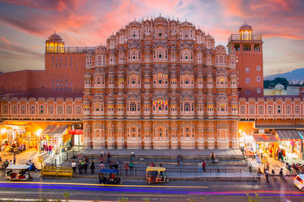
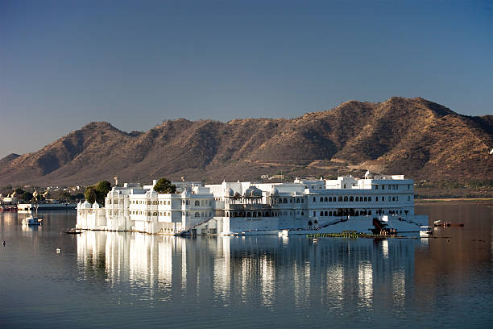
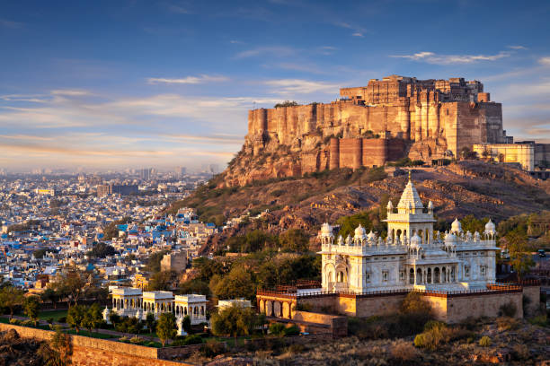
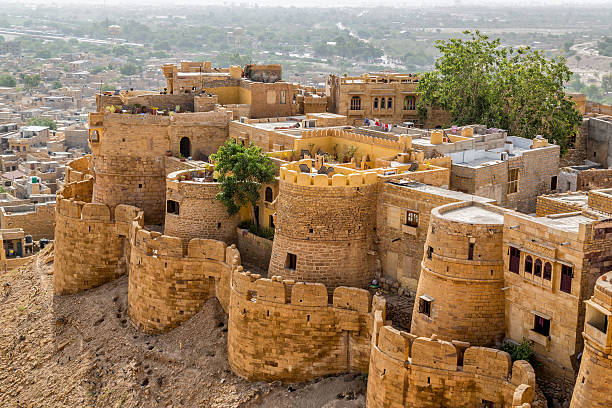
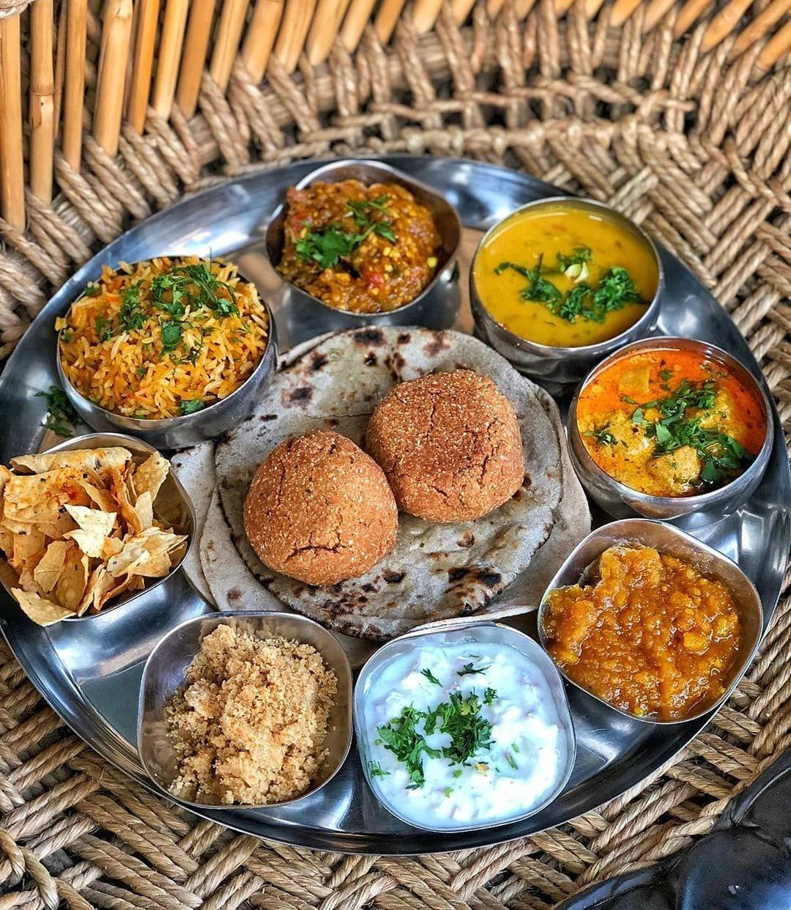

01
Jaipur
The Pink City — world-famous for Hawa Mahal, Amber Fort, City Palace, astronomical Jantar Mantar, and vibrant gem bazaars.

Discover magnificent hill forts, opulent royal palaces, Thar desert dunes, vibrant folk arts, and the timeless Rajput heritage of Rajasthan.
Explore Rajasthan ↓Rajasthan is India's land of kings, celebrated worldwide for its impregnable UNESCO World Heritage forts, intricately carved havelis, lake palaces, and rich desert folklore.
From the pink-hued bazaars of Jaipur and the romantic waterways of Udaipur to the cobalt streets of Jodhpur and the golden sandstone dunes of Jaisalmer, Rajasthan offers an unforgettable royal journey.
Famous royal cities, desert citadels, and lake palaces of Rajasthan.

The Pink City — world-famous for Hawa Mahal, Amber Fort, City Palace, astronomical Jantar Mantar, and vibrant gem bazaars.

The City of Lakes — renowned for fairy-tale marble palaces floating on Lake Pichola, Jagmandir, and Aravalli mountain sunsets.

The Blue City — anchored by the towering Mehrangarh Fort, Umaid Bhawan Palace, and charming indigo-colored old quarters.

The Golden City — home to the living Sonar Qila sandstone fort, ornate Patwon Ki Haveli, and the Thar Desert Sam Sand Dunes.
Rajasthani cuisine is shaped by desert heritage — focusing on rich ghee preparations, spicy gravies, sun-dried wild beans, and celebratory festive sweets.

Soulful desert tunes played by Manganiyar and Langa musicians using Sarangi, Kamaicha, Khartal, and Dholak.
UNESCO-recognized Kalbelia snake-charmer dance and the graceful swirling Ghoomar performed in royal attire.
Jaipur blue pottery, Sanganeri block printing, Bandhani tie-dye textiles, and fine Meenakari enamel jewelry.
World-renowned Pushkar Camel Fair, Desert Festival in Jaisalmer, and vibrant royal Gangaur and Teej processions.
Discover all 28 states, local food specialties, and centuries of living traditions.
← Back to All States